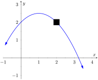
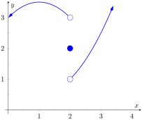
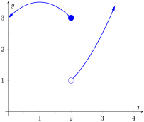
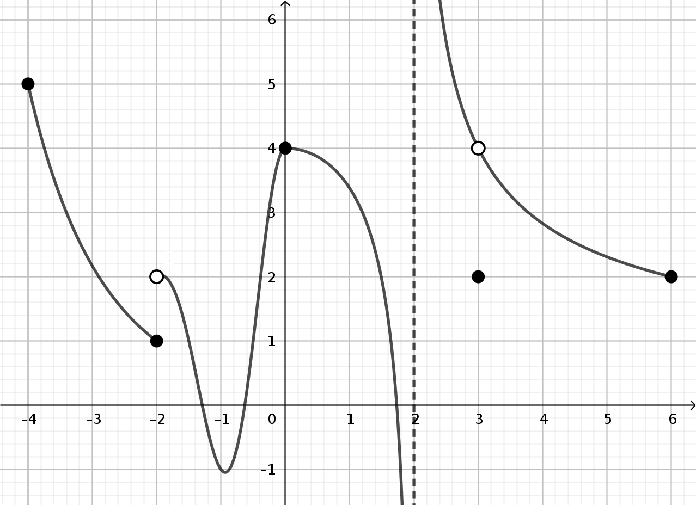
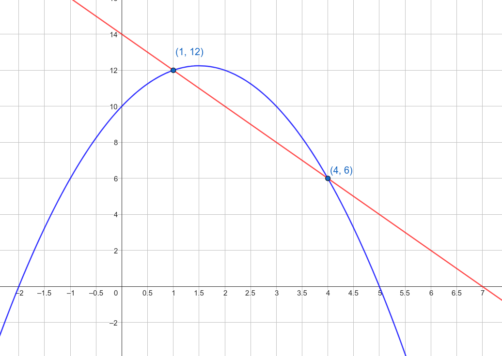
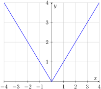
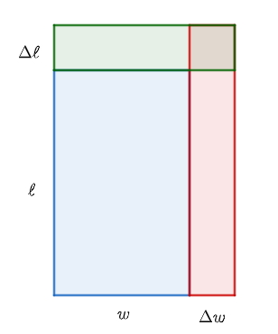
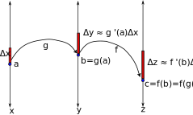
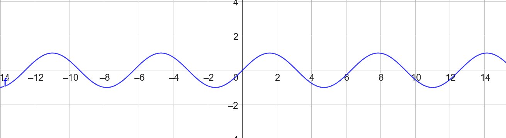

\(\newcommand{\abs}[1]{\left\lvert #1\right\rvert}
\newcommand{\di}{\displaystyle}
\newcommand{\lt}{<}
\newcommand{\gt}{>}
\newcommand{\amp}{&}
\definecolor{fillinmathshade}{gray}{0.9}
\newcommand{\fillinmath}[1]{\mathchoice{\colorbox{fillinmathshade}{$\displaystyle \phantom{\,#1\,}$}}{\colorbox{fillinmathshade}{$\textstyle \phantom{\,#1\,}$}}{\colorbox{fillinmathshade}{$\scriptstyle \phantom{\,#1\,}$}}{\colorbox{fillinmathshade}{$\scriptscriptstyle\phantom{\,#1\,}$}}}
\)
Activities for Math 1560
Fall 2024
| Sean Fitzpatrick |
|---|
| University of Lethbridge |
|
Why limits?
Short answer: because derivatives (and integrals).
Derivatives: on a graph \(y=f(x)\text{,}\) what happens to \(\dfrac{\Delta y}{\Delta x}\) when \(\Delta x\) shrinks to zero?
Integrals: what happens when we add up more and more pieces that are getting smaller and smaller?
Limits let us talk about the value of a function at points where plugging in a number doesn’t make sense.
(For example, the value of \(\dfrac{\sin(x)}{x}\) when \(x=0\text{.}\))
Understanding limits graphically
Suppose we have the following graph of a function \(f\text{,}\) but we can’t see what is happening under the square:

If you had to guess, when \(x\) is close to 2, you would say that \(f(x)\) is close to:
0
1
2
3
What can you say about \(f(2)\text{?}\)
\(\displaystyle f(2)=1\)
\(\displaystyle f(2)=2\)
\(\displaystyle f(2)=3\)
Nothing, until we move that square.
Defining limits of functions (informally)
Limits provide us with a language for talking precisely about approximations.
The expression
\begin{equation*}
\lim_{x\to c}f(x) = L
\end{equation*}
means that when
\(x\) is close to
\(c\) (but
not equal to
\(c\)), we can expect
\(f(x)\) to be close to
\(L\text{.}\) And the closer \(x\) gets to \(c\text{,}\) the closer \(f(x)\) gets to \(L\text{.}\)
Another graphical limit
Referring to the graph on the right, what is the value of \(\lim_{x\to 2}f(x)\text{?}\)
\(\displaystyle \lim_{x\to 2}f(x)=1\)
\(\displaystyle \lim_{x\to 2}f(x)=2\)
\(\displaystyle \lim_{x\to 2}f(x)=3\)
It doesn’t exist.

More about that last (non) limit
We have language to talk about this situation.
The left-hand limit at \(c\) only considers values \(x\lt c\text{.}\)
The right-hand limit at \(c\) only considers values \(x\gt c\text{.}\)
Here, we would consider \(\lim\limits_{x\to 2^-}f(x)\) and \(\lim\limits_{x\to 2^+}f(x)\text{.}\)
Understanding limits numerically
Sometimes you can get an idea of a limit by trying test values.
Consider the function \(f(x) = \sin\left(\dfrac{\pi}{x}\right)\text{.}\)
Try plugging in \(x=0.1, 0.01, 0.001\text{.}\) What do you think is the value of \(\lim\limits_{x\to 0}f(x)\text{?}\)
Limit properties
The following properties of limits are true: \(\lim\limits_{x\to c}(k)=k\) for any constant \(k\text{,}\) \(\lim\limits_{x\to c}(x)=c\text{,}\) and if
\begin{equation*}
\lim_{x\to c}f(x)=L\quad\text{ and } \quad \lim_{x\to c}g(x)=M\text{,}
\end{equation*}
then:
\(\displaystyle \lim\limits_{x\to c}(f(x)+g(x))=L+M\)
\(\displaystyle \lim\limits_{x\to c}(f(x)-g(x))=L-M\)
If \(k\) is a constant, then \(\lim\limits_{x\to c}(kf(x))=kL\text{.}\)
\(\displaystyle \lim\limits_{x\to c}(f(x)g(x))=LM\)
\(\lim\limits_{x\to c}\left(\frac{f(x)}{g(x)}\right)=\frac{L}{M}\text{,}\) if \(M\neq 0\text{.}\)
Using limit properties
Use limit properties to evaluate, if possible:
\(\displaystyle \lim\limits_{x\to 2}(x^2-5x+3)\)
\(\displaystyle \lim\limits_{x\to 1}\dfrac{x^2-1}{x+1}\)
\(\displaystyle \lim\limits_{x\to -1}\dfrac{x^2-1}{x+1}\)
Remember that \(x\to -1\) means \(x\) is close to \(-1\text{,}\) but not equal.
Can we replace the last limit with something equivalent (and easier)?
Using algebra to evaluate a limit
Evaluate the following limits:
\begin{equation*}
\lim\limits_{x\to -1}\dfrac{x^2+4x+3}{x^2-1}
\end{equation*}
\begin{equation*}
\lim\limits_{x\to 4}\dfrac{x^3-4x^2}{x^3-16x}
\end{equation*}
Other algebraic techniques
Common denominators. E.g.
\begin{equation*}
\lim_{x\to 1}\frac{\frac1x-x}{x^2-1}
\end{equation*}
Rationalizing. E.g.
\begin{equation*}
\lim_{x\to 4}\frac{x^2-5x+4}{2-\sqrt{x}}
\end{equation*}
A trigonometric limit
The limit
\begin{equation*}
\lim\limits_{x\to 0}\dfrac{\sin(2x)}{x}
\end{equation*}
is a
\(0/0\) limit.
Which of the following is a valid first step?
Factor out the 2 to get \(2\sin(x)\)
Cancel the \(x\) in the numerator with the \(x\) in the denominator
Multiply numerator and denominator by 2
Put your calculator in degrees mode
A trig limit
Evaluate
\begin{equation*}
\lim\limits_{x\to 0}\dfrac{\sin(3x)}{2x}\text{.}
\end{equation*}
Recall from the tutorial that \(\lim\limits_{x\to 0}\dfrac{\sin(x)}{x}=1\text{.}\)
The goal here is not so much the answer as the process. (There is a wrong way to get the right answer!)
If you took calc in high school: we don’t get to use L’Hospital’s rule.
Challenge: evaluate
\begin{equation*}
\lim\limits_{x\to 0}\frac{1-\cos(x)}{x}
\end{equation*}
Piecewise-defined functions
Sometimes we need to work with functions that are defined differently on different parts of their domain.
Applications include more than just providing examples for calculus class, including UV index and your taxes.
For the piecewise-defined function \(f(x) = \begin{cases}2-x, \amp x\lt -1\\ 1+x^2, \amp -1\leq x\lt 2\\ \sin(\pi x),\amp x\geq 2\end{cases}\text{:}\)
What is the value of \(f(0)\text{?}\)
2
0
\(\displaystyle -1\)
1
\(\phantom{abcdefghijk}\)
What is the value of \(f(2)\text{?}\)
2
0
5
1
The absolute value is piecewise-defined
You may have learned that the function \(\abs{x}\) measures “distance from 0”:
If \(x\geq 0\text{,}\) then \(\abs{x}=x\text{.}\) If \(x\lt 0\text{,}\) then \(\abs{x}=-x\text{.}\)
Which of the following functions is equivalent to \(f(x)=\abs{x-2}\text{?}\)
\(\displaystyle f(x) = \begin{cases}x-2, \amp x\geq 2\\ 2-x, \amp x\lt 2\end{cases}\)
\(\displaystyle f(x) = \begin{cases}x-2, \amp x\geq 0\\ 2-x, \amp x\lt 0\end{cases}\)
\(\displaystyle f(x) = \begin{cases}x, \amp x\geq 2\\ -x, \amp x\lt 2\end{cases}\)
Finding one-sided limits (graph)
For the graph on the right:
The left-hand limit is 3 and the right-hand limit is 3.
The left-hand limit is 1 and the right-hand limit is 3.
The left-hand limit is 3 and the right-hand limit is 1.
The left-hand limit is 1 and the right-hand limit is 1.
The left-hand limit is 3 and the right-hand limit does not exist.

One-sided limits
For \(f(x) = \begin{cases}4\cos(x), \amp x\lt 0\\2, \amp x=0\\ 2-3x^2, \amp x\gt 0\end{cases}\text{,}\) evaluate \(\lim\limits_{x\to 0^-}f(x)\) and \(\lim\limits_{x\to 0^+}f(x)
\text{.}\)
Reminder: \(x\to 0^-\) means \(x\lt 0\) and \(x\to 0\text{.}\) \(x\to 0^+\) means \(x\gt 0\) and \(x\to 0\text{.}\)
Finding one-sided limits (formula)
Let \(f(x) = \begin{cases}4-x^2,\amp x\lt 3\\ 2x-5,\amp x\geq 3\end{cases}\text{.}\)
To compute the left-hand limit \(\lim\limits_{x\to 3^-}f(x)\text{:}\)
We plug in \(x=2.99\text{,}\) since that’s a little less than 3.
We plug in \(3.01\text{,}\) since that’s a little more than 3.
We set \(f(x)=4-x^2\text{,}\) since \(x\lt 3\text{,}\) and take the limit as \(x\to 3\text{.}\)
We set \(f(x)=2x-5\text{,}\) since \(x\gt 3\text{,}\) and take the limit as \(x\to 3\text{.}\)
We plug in \(x=3\text{,}\) since the limit is the same as \(f(3)\text{.}\)
The key theorem
Theorem 1.
Let \(f(x)\) be defined for all \(x\) in an open interval containing \(c\text{,}\) except possibly not at \(x=c\text{.}\) Then
\begin{equation*}
\lim_{x\to c}f(x) = L
\end{equation*}
if and only if
\begin{equation*}
\lim_{x\to c^-}f(x) = L \quad \text{ and } \quad \lim_{x\to c^+}f(x) = L\text{.}
\end{equation*}
Continuity
Definition 2.
A function \(f\) is continuous at a point \(c\) if
\begin{equation*}
\lim_{x\to c}f(x) = f(c)\text{.}
\end{equation*}
\(f\) is continuous on an open interval \((a,b)\) if it is continuous at each point in the interval.
Buried in this equation:
\(f(x)\) is defined for all \(x\) close to \(c\)
-
\(\lim\limits_{x\to c}f(x)\) exists
(So the left and right hand limits must be the same.)
\(f(c)\) is defined
The limit at \(c\) (which exists) must be equal to the value of \(f(c)\) (which is defined)
Continuity, graphically
The graph of a function is shown on the right. At what points is the function not continuous?
At \(x=-2\) only
At \(x=-2\) and \(x=3\)
At \(x=-2\) and \(x=2\)
At \(x=-2\text{,}\) \(x=2\text{,}\) and \(x=3\)
At \(x=-2\text{,}\) \(x=0\text{,}\) \(x=2\text{,}\) and \(x=3\)

What should it mean to say that \(f(x)\) is continuous at the endpoints of the interval?
Continuity, analytically
Let \(f(x) = \begin{cases}5x^2-3x,\amp x\lt 1\\4,\amp x=1\\2\cos(x-1),\amp x\gt 1\end{cases}\text{.}\)
Is \(f\) continuous at \(x=1\text{?}\)
How could we change the definition of \(f(x)\) to ensure \(f\) is continuous at \(x=1\text{?}\)
Is \(f\) continuous at \(x=0\text{?}\) How would you explain this?
Properties of continuous functions
The following functions are continuous on their domains:
polynomial and rational functions
radical (root) functions
trig functions: \(\sin(x),\cos(x),\tan(x),\csc(x),\sec(x),\cot(x)\)
exponential functions: \(e^x, 2^x, 10^x\text{,}\) etc.
logarithms: \(\ln(x), \log_2(x), \log_{10}(x)\text{,}\) etc.
Any function formed from any of the above using addition, subtraction, multiplication, division, and composition. (As long as we don’t divide by 0.)
Note: some of these functions have vertical asymptotes. These are points of discontinuity, but they are not in the domain.
Checking continuity
Let \(f(x)=\sin(3x^2-5x+2)\text{.}\)
Explain why you know that \(f\) is continuous at all real numbers.
Setting a parameter
Consider the function \(f(x) = \begin{cases}5x+c,\amp x\leq 2\\ cx^2+2,\amp x\gt 2\end{cases}\text{.}\)
For what value of \(c\) is \(f\) continuous at \(2\text{?}\)
Types of discontinuity
There are many ways that a function can fail to be continuous at a point.
Some of these are common enough that they have names:
A function \(f\) has a jump discontinuity at \(c\) if
\begin{equation*}
\lim_{x\to c^-}f(x) \neq \lim_{x\to c^+}f(x)
\end{equation*}
A function \(f\) has a removable discontinuity at \(c\) if \(\lim\limits_{x\to c}f(x)\) exists, but does not equal \(f(c)\)
A function \(f\) has an infinite discontinuity at \(c\) if it has a vertical asymptote \(x=c\text{.}\)
Classifying discontinuities
What type of discontinuity does each function have?
-
\(f(x) = \dfrac{\abs{x}}{x}\text{,}\) at \(x=0\)
-
\(f(x) = \dfrac{\sin(x)}{x}\text{,}\) at \(x=0\)
-
\(f(x) = \dfrac1x\text{,}\) at \(x=0\)
Intermediate Value Theorem
Theorem 3.
Let \(f\) be a continuous function on an interval \([a,b]\text{,}\) and suppose that \(f(a)\lt f(b)\text{.}\)
Then for every \(y\) such that \(f(a)\lt y\lt f(b)\text{,}\) there is some \(x\in (a,b)\) such that \(f(x)=y\text{.}\)
Challenge
Using the Intermediate Value Theorem, prove that there must be some number \(x\) between 0 and 1 such that \(\cos(x)=x\text{.}\)
Hint: consider the function \(g(x)=\cos(x)-x\text{.}\) Is it continuous? Can you show that it must have a zero on the interval \((0,1)\text{?}\)
Intermediate Value Theorem
Theorem 4.
Let \(f\) be a continuous function on an interval \([a,b]\text{,}\) and suppose that \(f(a)\lt f(b)\text{.}\)
Then for every \(y\) such that \(f(a)\lt y\lt f(b)\text{,}\) there is some \(x\in (a,b)\) such that \(f(x)=y\text{.}\)
Sign diagrams
Suppose we know that a function \(f\) changes from positive to negative at \(c\text{.}\) According to the Intermediate Value Theorem, which of the following is true?
\(\displaystyle f(c)=0\)
\(f\) is not continuous at \(c\)
Either \(f(c)=0\) or \(f\) is not continuous at \(c\)
The IVT tells us nothing about \(f(c)\)
This lets us create a sign diagram for \(f\text{.}\) On a number line, mark all the zeros and discontinuities of \(f\text{.}\) Between each of these points, either \(f\) is positive, or \(f\) is negative.
Using a sign diagram
Let \(f(x) = \dfrac{(x+1)(x-4)}{(x+2)^2(x-2)}\text{.}\)
Construct a sign diagram for \(f(x)\) to answer the following:
On what interval(s) is \(f(x)\gt 0\text{?}\)
Infinite limits
A function \(f\) is unbounded (or has an infinite limit) at \(c\) if the value of \(f(x)\) can be arbitrarily large when \(x\) is close to \(c\text{.}\)
Basic principle: if \(x\) is very small, \(\dfrac1x\) will be very big.
Here “large” could mean large and positive, or large and negative.
Notation includes:
\(\displaystyle \lim\limits_{x\to c}f(x)=\infty\)
\(\displaystyle \lim\limits_{x\to c^+}f(x)=-\infty\)
\(\displaystyle \lim\limits_{x\to c^-}f(x)=\infty\)
etc.
Infinite limits are associated with vertical asymptotes, and are usually caused by a division by zero.
Evaluating infinite limits
Let \(f(x) = \dfrac{(x+1)(x-4)}{(x+2)^2(x-2)}\) (same function as 2 slides ago).
Construct a sign diagram for \(f(x)\text{,}\) and use it to find the following:
- \(\displaystyle \lim_{x\to -2^-}f(x)\)
- \(\displaystyle \lim_{x\to -2^+}f(x)\)
- \(\displaystyle \lim_{x\to 2^-}f(x)\)
- \(\displaystyle \lim_{x\to 2^+}f(x)\)
Brain logic, or computer logic?
Evaluate \(\lim\limits_{x\to 0^+}\csc(1/x)\text{.}\)
Try using \(x=0.1, 0.01, 0.001,\ldots\text{.}\) What does this tell you about the limit?
Knowing your asymptote from a hole in the graph
Identify the vertical asymptotes of the function \(f(x) = \dfrac{x^2-4}{x^3-5x^2+6x}\text{.}\)
Note: \(x\) is a common factor in the denominator.
Limits at infinity
Limits at infinity have to do with end behaviour: what happens to \(f(x)\) when \(x\) is really big? (Either positive or negative.)
Basic principle: if \(x\) is really big, \(\dfrac1x\) will be really small.
Notation includes:
\(\displaystyle \lim\limits_{x\to\infty}f(x)=L\)
\(\displaystyle \lim\limits_{x\to -\infty}f(x)=L\)
\(\displaystyle \lim\limits_{x\to\infty}f(x)=\infty\)
etc.
If \(f(x)\) has a finite limit \(L\) as \(x\to\infty\) or \(x\to -\infty\text{,}\) we say that \(y=L\) is a horizontal asymptote.
Evaluating limits at infinity
What can we say about the following limits?
- \(\displaystyle \lim_{x\to\infty}(x^3)\)
- \(\displaystyle \lim_{x\to -\infty}(x^3)\)
- \(\displaystyle \lim_{x\to\infty}\dfrac{1}{x^3}\)
- \(\displaystyle \lim_{x\to -\infty}\dfrac{1}{x^3}\)
Dividing by a power of \(x\)
Let \(f(x) = \dfrac{3x^2-4x}{4-5x+8x^2}\text{.}\)
Which of the following is equal to \(f(x)\) when \(x\neq 0\text{?}\)
-
\(\dfrac{3-4x}{4-5x+8}\)
-
\(\dfrac{3-4/x}{4-5x+8x^2}\)
\(\displaystyle \dfrac{3-4/x}{8-5/x+4/x^2}\)
Using this, compute \(\lim\limits_{x\to\infty}f(x)\text{.}\)
Horizontal asymptotes of rational functions
A rational function looks like
\begin{equation*}
f(x) = \frac{a_mx^m+a_{m-1}x^{m-1}+\cdots+a_1x+a_0}{b_nx^n+b_{n-1}x^{n-1}+\cdots + b_1x+b_0}\text{.}
\end{equation*}
(
\(f(x)\) is the ratio of two polynomials)
For any rational function:
If \(m\gt n\text{,}\) there is no horizontal asymptote
If \(m\lt n\text{,}\) the horizontal asymptote is \(y=0\)
If \(m=n\text{,}\) the horizontal asymptote is \(y=\dfrac{a_n}{b_n}\)
An interesting limit
For the function \(f(x)=\dfrac{x}{\sqrt{x^2+1}}\text{:}\)
\(\lim\limits_{x\to \infty}f(x)=1\) and \(\lim\limits_{x\to -\infty}f(x)=1\)
\(\lim\limits_{x\to \infty}f(x)=1\) and \(\lim\limits_{x\to -\infty}f(x)=-1\)
\(\lim\limits_{x\to \infty}f(x)=0\) and \(\lim\limits_{x\to -\infty}f(x)=0\)
Understanding asymptotes
Which of the following is true?
The graph of a function cannot cross either a vertical asymptote or a horizontal asymptote
The graph of a function cannot cross a horizontal asymptote, but it can cross a vertical asymptote
The graph of a function cannot cross a vertical asymptote, but it can cross a horizontal asymptote
The graph of a function can cross both a horizontal asymptote and a vertical asymptote
Understanding asymptotes
Which of the following is true?
The graph of a function cannot cross either a vertical asymptote or a horizontal asymptote
The graph of a function cannot cross a horizontal asymptote, but it can cross a vertical asymptote
The graph of a function cannot cross a vertical asymptote, but it can cross a horizontal asymptote
The graph of a function can cross both a horizontal asymptote and a vertical asymptote
Slope: average rate of change
For the function \(f\) whose graph is shown, what is the average rate of change \(\left(\dfrac{\Delta y}{\Delta x}\right)\) on the interval \([1,4]\text{?}\)
6
\(\displaystyle -6\)
2
\(\displaystyle -2\)

What if we used the interval \([1,3]\text{?}\) Or \([1,2]\text{?}\) Or \([1,1.1]\text{?}\) Or \([0.9,1]\text{?}\)
Let’s try it out!
Tangent lines
The tangent line at a point \((a,f(a))\) on a graph \(y=f(x)\) is the line with slope given by
\begin{equation*}
m = f'(a) = \lim_{h\to 0}\frac{f(a+h)-f(a)}{h}\text{.}
\end{equation*}
The slope \(f'(a)\) (read f prime at a) is called the derivative of \(f\) at \(a\text{.}\)
Notice that this is the same calculation we’d use to find instantaneous velocity.
Computing a derivative
Let \(f(x)=x^2+3x\text{.}\) Compute the derivative \(f'(2)\) by evaluating the limit
\begin{equation*}
\lim_{h\to 0}\frac{f(2+h)-f(2)}{h}\text{.}
\end{equation*}
The derivative as a function
By varying the point at which we compute the derivative, we can define a new function \(f'(x)\text{,}\) the derivative of \(f\text{:}\)
\begin{equation*}
f'(x) = \lim_{h\to 0}\frac{f(x+h)-f(x)}{h}\text{.}
\end{equation*}
Using this definition, find \(f'(x)\) if \(f(x) = x^3+5x\text{.}\)
Note: the binomial formula tells us that \((a+b)^3 = a^3+3a^2b+3ab^2+b^3\text{.}\)
The tangent line
To find the equation of the tangent line, we use the point-slope formula:
The equation of the line through \((x_0,y_0)\) with slope \(m\) is
\begin{equation*}
y=y_0+m(x-x_0)\text{.}
\end{equation*}
For the tangent line through \((a,f(a))\) with slope \(f'(a)\text{,}\) this becomes
\begin{equation*}
y=f(a)+f'(a)(x-a)\text{.}
\end{equation*}
Find:
The equation of the tangent line to \(y=4x-x^2\) when \(x=1\)
The equation of the tangent line to \(y=\sqrt{x}\) when \(x=4\)
A trig example
Find \(f'(x)\) for the function \(f(x)=\cos(x)\text{.}\)
Recap: derivative as slope of tangent line
Recall: the derivative of a function \(f\) is given by
\begin{equation*}
f'(x) = \lim_{h\to 0}\frac{f(x+h)-f(x)}{h}\text{.}
\end{equation*}
The definition was motivated by finding the slope of a tangent line. (We can also think of instantaneous velocity.)
At a point \((c,f(c))\) on a graph \(y=f(x)\text{,}\) the equation of the tangent line is
\begin{equation*}
y = f(c)+f'(c)(x-c)\text{.}
\end{equation*}
The derivative also gives a linear approximation: for small \(\Delta x\text{,}\)
\begin{equation*}
\Delta y = f(c+\Delta x)-f(c) \approx f'(c)\Delta x\text{.}
\end{equation*}
Absolute value
To the right is the graph of the absolute value function, \(f(x)=\lvert x\rvert\text{.}\)

What do you think is the slope of the tangent line at \(x=c\text{,}\) if \(c\gt 0\text{?}\)
What do you think is the slope of the tangent line at \(x=c\text{,}\) if \(c\lt 0\text{?}\)
What do you think is the slope of the tangent line at \(x=0\text{?}\)
Basic derivative rules
Thus begins Unit 2. Goodbye, limits! (For now…)
The limit definition of the derivative gives us great intuition, but it’s not very practical.
What if we wanted to find the derivative of \(f(x)=5x^8-4x^5+2x^4-15x^3-8x+3\text{?}\)
Or \(g(x)=\sin(\sqrt{x^4+7})\text{?}\)
Simple functions
For a constant function \(f(x)=c\text{,}\) what is \(f'(x)\text{?}\)
For a linear function \(f(x)=mx+b\text{,}\) what is \(f'(x)\text{?}\)
Power functions
We have seen the following so far (assuming we’ve been reading along in the textbook):
The derivative of \(f(x)=x\) is \(f'(x)=1\)
The derivative of \(f(x)=x^2\) is \(f'(x)=2x\)
The derivative of \(f(x)=x^3\) is \(f'(x)=3x^2\)
The derivative of \(f(x)=\sqrt{x}=x^{1/2}\) is \(f'(x)=\frac{1}{2\sqrt{x}}=\frac12 x^{-1/2}\)
The derivative of \(f(x)=\frac1x=x^{-1}\) is \(f'(x)=-\frac{1}{x^2}=-1x^{-2}\)
In general, what do you think we should get for the derivative of \(f(x)=x^n\text{?}\)
Constant multiples
If \(g(x)=3f(x)\text{,}\) what is the relationship between \(g'(x)\) and \(f'(x)\text{?}\)
If \(f(x)=12x^{2/3}\text{,}\) what is \(f'(x)\text{?}\)
Sum and difference
Consider functions \(f(x) = ax+b\) and \(g(x)=cx+d\text{.}\)
What is the derivative of \(f+g\text{?}\)
In general, the derivative of \(f(x)+g(x)\) is \(f'(x)+g'(x)\text{.}\)
The same is true of differences, and the rule extends to sums/differences with three or more terms.
A polynomial
Earlier, we asked what the derivative might be for \(f(x)=5x^8-4x^5+2x^4-15x^3-8x+3\text{.}\)
So, what is it? (Use the rules for powers, sums, and constant multiples.)
Other common functions
Here are derivatives of some other common functions. These can be determined using the limit definition.
The derivative of \(f(x)=\sin(x)\) is \(f'(x)=\cos(x)\)
The derivative of \(f(x)=\cos(x)\) is \(f'(x)=-\sin(x)\)
The derivative of \(f(x)=e^x\) is \(f'(x)=e^x\)
The derivative of \(f(x)=\ln(x)\) is \(f'(x)=\dfrac1x\)
Leibniz notation: another notation for the derivative is as follows: if \(y=f(x)\text{,}\) we write \(\dfrac{dy}{dx}=f'(x)\text{.}\)
We can read \(\dfrac{d}{dx}\) as “the derivative of”. This allows us to shorten some statements:
\(\dfrac{d}{dx}(\sin(x))=\cos(x), \dfrac{d}{dx}(\cos(x))=-\sin(x)\)
More examples
What is the derivative of \(f(x)=4\cos(x)-3e^x+5x^4\text{?}\)
What is the derivative of \(g(x)=\ln(5)+\pi^7+e^3\text{?}\)
A product of functions
Let \(f(x)=4x^2+3x\) and let \(g(x)=2x^3\text{.}\)
Let \(h(x)=f(x)g(x)\text{.}\)
True or false: \(h'(x)=f'(x)g'(x)\)
What if \(f(x)=x\) and \(g(x)=x\text{?}\)
What if you “multiply out” first: \((4x^2+3x)(2x^3)=8x^5+6x^4\text{.}\)
Area of a rectangle
Consider a rectangle with length \(\ell\) and width \(w\text{.}\)
We know that the area will be \(A = \ell w\text{.}\)
Now suppose we change the length to \(\ell+\Delta \ell\) and the width to \(w + \Delta w\text{.}\)
What is the resulting change in the area, \(\Delta A\text{?}\)
\(\displaystyle \Delta \ell \Delta w\)
\(\displaystyle \Delta \ell + \Delta w\)
\(\displaystyle w\Delta \ell + \ell \Delta w\)
\(\displaystyle w\Delta \ell + \ell \Delta w + \Delta \ell \Delta w\)

Now, suppose \(\ell=\ell(x)\) and \(w=w(x)\) depend on some variable \(x\text{.}\) Then \(\Delta \ell \approx \ell'(x)\Delta x\) and \(\Delta w \approx w'(x)\Delta x\text{.}\) What is \(\dfrac{\Delta A}{\Delta x}\text{?}\)
The Product Rule
If \(f(x)\) and \(g(x)\) are differentiable functions, and \(h(x)=f(x)g(x)\text{,}\) then
\begin{equation*}
h'(x)=f'(x)g(x)+f(x)g'(x)\text{.}
\end{equation*}
Using Leibniz notation: \(\dfrac{d}{dx}(f(x)g(x))=g(x)\dfrac{d}{dx}(f(x))+f(x)\dfrac{d}{dx}(g(x))\)
Let’s try it!
Find the derivatives of the following functions:
\(p(x)=x^3\sin(x)\text{.}\)
\(\displaystyle h(x)=\sqrt{x}\ln(x)\)
Oh no, three things this time!
What is the derivative of \(R(x) = x^4\cos(x)e^x\text{?}\)
Hint: multiplication is associative: \(abc=a(bc)=(ab)c\)
Is it always a good idea?
Below are four functions written as a product. Do they all require the product rule?
\(\displaystyle f(x)=(42)(x^7)\)
\(\displaystyle f(x)=(e^x)(x^7)\)
\(\displaystyle f(x)=(x^2+2x)(x^7)\)
\(\displaystyle f(x) = \sqrt{x}(x^7)\)
Quotient rule
Let \(f(x)\) and \(g(x)\) be differentiable functions. For any \(x\) such that \(g(x)\neq 0\text{,}\) if \(h(x)=\dfrac{f(x)}{g(x)}\text{,}\) then
\begin{equation*}
h'(x) = \dfrac{f'(x)g(x)-f(x)g'(x)}{(g(x))^2}\text{.}
\end{equation*}
Leibniz-style:
\begin{equation*}
\dfrac{d}{dx}\left(\dfrac{f(x)}{g(x)}\right) = \dfrac{g(x)\frac{d}{dx}f(x)-f(x)\frac{d}{dx}g(x)}{(g(x))^2}
\end{equation*}
Gotta practice them quotients!
Find the derivative of the following functions:
\(f(x)=\dfrac{\sin(x)}{\cos(x)}\text{?}\)
\(\displaystyle g(x) = \dfrac{e^x}{x^2+1}\)
Do we really have to?
The quotient rule isn’t the nicest formula around. Is it always the best idea?
For each of the following, should we use quotient rule?
\(\displaystyle f(x) = \dfrac{x^3+4x^2}{x}\)
\(\displaystyle f(x) = \dfrac{4}{x^2}\)
\(\displaystyle f(x) = \dfrac{e^x}{15}\)
\(\displaystyle f(x) = \dfrac{\sin(x)}{\cos(x)+x^2}\)
Product and quotient rule together? 😱
What is the derivative of \(f(x)=\dfrac{x^3\sin(x)}{x^2+e^x}\text{?}\)
A totally real and not made up problem
A rancher observes that, on average, for every 25 additional bales of hay produced in her fields, the population of her cattle herd increases by 4.
She also knows that for every additional 10 mm of rain in a growing season, she will produce 75 more bales of hay.
Recent weather patterns have seen rainfall increase by an average of 5 mm per year.
At what rate (per year) is the size of her herd changing?
6 cows per year
\(\dfrac{8}{75}\) of a cow per year
\(\dfrac53\) of a cow per year
About 234 cows per year
Composing linear functions
Let \(f(x)=3(x-4)+5\) and let \(g(x)=-7x+4\)
What function is \(f(g(x))\text{?}\)
\(\displaystyle -21(x-4)-24\)
\(\displaystyle -21x-5\)
\(\displaystyle -21x+5\)
\(\displaystyle -21(x-4)+17\)
What is the derivative of \(f(g(x))\text{?}\)
How is it related to the derivatives of \(f(x)\) and \(g(x)\text{?}\)
The concept of the chain rule
Derivatives represent rates of change.
When one quantity depends on another, the rates at which they are changing are multiplied.

The chain rule
Theorem 5.
If \(g\) is differentiable at \(x\text{,}\) and \(f\) is differentiable at \(g(x)\text{,}\) then \(h=f\circ g\) is differentiable at \(x\text{,}\) and
\begin{equation*}
h'(x) = \dfrac{d}{dx}(f(g(x))) = f'(g(x))g'(x)\text{.}
\end{equation*}
OK, let’s try this thing
Find the derivative of the following functions:
\(\displaystyle h(x)=e^{\sqrt{x}}\)
\(\displaystyle k(x)=\sqrt{e^x}\)
\(\displaystyle p(x)=\sin(x^4)\)
\(\displaystyle q(x)=\sin^4(x)\)
Example: derivative of \(\sec(x)\)
We know the derivatives of \(\sin(x)\) and \(\cos(x)\text{.}\)
What about their reciprocals, \(\csc(x)\) and \(\sec(x)\text{?}\)
Observe that \(\sec(x) = \dfrac{1}{\cos(x)}=(\cos(x))^{-1}\)
Caution!! \((\cos(x))^{-1}\) is not the same thing as \(\cos^{-1}(x)\text{!}\) (Even though \((\cos(x))^2\) is the same thing as \(\cos^2(x)\text{...}\))
By the chain rule, \(\dfrac{d}{dx}(\sec(x))=\dfrac{d}{dx}(\cos(x))^{-1}=-1(\cos(x))^{-2}(-\sin(x))\)
We can clean this up: \(-1(\cos(x))^{-2}(-\sin(x))=\dfrac{\sin(x)}{\cos^2(x)}=\sec(x)\tan(x)\)
Goodbye, cruel quotient rule!
It may be helpful to observe that \(\dfrac{f(x)}{g(x)}=f(x)(g(x))^{-1}\text{.}\)
\(x^a\) and \(a^x\)
Technically, we’ve only demonstrated the power rule for the dervative of \(x^n\text{,}\) when \(n=1, 2, 3, \ldots\)
Recall the following two facts about logarithms:
\(\displaystyle \ln(p^q)=q\ln(p)\)
Since \(\ln(x)\) is the inverse of \(e^x\text{,}\) \(\ln(e^x)=x\) and \(e^{\ln(x)}=x\text{.}\)
If \(f(x)=x^a\) and \(g(x)=a^x\text{,}\) then:
\(f(x)=e^{a\ln(x)}\) and \(g(x)=e^{x\ln(a)}\)
\(f(x)=e^{x\ln(a)}\) and \(g(x)=e^{a\ln(x)}\)
\(f(x)=\ln(e^{ax})\) and \(g(x)=\log_a(a^{ex})\)
Harder chain rule
Exercise: what is the derivative of \(f(x) = \tan(\sqrt{x^4+1})\text{?}\)
Reminder: the derivative of \(\tan(x)\) is \(\sec^2(x)\text{.}\)
Products, and quotients, and chain rule, oh my!
What is the derivative of \(f(x) = \dfrac{e^{x^3}\sin^2(x)}{\sqrt{x^2+1}}\text{?}\)
Sometimes, logarithms are our friends
For any function \(f(x)\text{,}\) let \(g(x)=\ln(f(x))\text{.}\) Recall that the derivative of \(\ln(x)\) is \(\dfrac1x\text{.}\)
By the chain rule,
\begin{equation*}
g'(x) = \frac{d}{dx}\ln(f(x)) = \frac{1}{f(x)}\frac{d}{dx}f(x) = \frac{f'(x)}{f(x)}\text{.}
\end{equation*}
Consider the function \(f(x) = \dfrac{e^{x^3}\sin^2(x)}{\sqrt{x^2+1}}\) from the last slide.
Use properties of logarithms to simplify \(\ln(f(x))\)
Find \(f'(x)\) by first finding the derivative of \(\ln(f(x))\)
Logarithmic differentiation
Let \(f(x) = (4+x^2)^{3x}\text{.}\) Find \(f'(x)\) by computing the derivative of \(\ln(f(x))\text{.}\)
Implicit differentiation
According to the chain rule, \(\dfrac{d}{dx}f(g(x))=f'(g(x))g'(x)\text{.}\)
If we let \(y=g(x)\) and write \(y'=g'(x)\text{,}\) this becomes:
\begin{equation*}
\frac{d}{dx}f(y) = f'(y)\,y'\text{.}
\end{equation*}
For example, \(\dfrac{d}{dx}(y^2)=2y\,y'\text{,}\) if we assume that \(y\) is a function of \(x\text{.}\)
This is called implicit differentiation.
The classic example: a circle
Consider the equation \(x^2+y^2=4\) (a circle). We say that it implicitly defines \(y\) as a function of \(x\text{.}\)
This means we can (in principle) find a function \(g(x)\) so that \(y=g(x)\) satisfies the equation:
\begin{equation*}
x^2+(g(x))^2=4\text{.}
\end{equation*}
The graph of \(g(x)\) won’t give the whole circle. (Why?) We might need different functions near different points.
Can we find a function that works near the point \((0,2)\text{?}\)
Can we find a function that works near the point \((1,-\sqrt{3})\text{?}\)
Can we find a function that works near the point \((2,0)\text{?}\)
Finding \(y'\)
Use implicit differentiation to find \(y'\) if
\begin{equation*}
x^2+y^2=4\text{.}
\end{equation*}
A harder example
Use implicit differentiation to find \(y'\) if \(y\) is implicitly defined as a function of \(x\) by the equation
\begin{equation*}
\sin(xy)+xy^3=7\text{.}
\end{equation*}
Tangent lines
We can use implicit differentiation to find the equation of a tangent line at a given point on a curve.
Example: find the equation of the tangent line to the curve given by the equation
\begin{equation*}
2x^2y^2+xy^3-x^2-4y^2=2
\end{equation*}
at the point
\((2,1)\text{.}\)
One more example
What is the equation of the tangent line to the curve
\begin{equation*}
(x^2+y^2)^2=4xy
\end{equation*}
at the point
\((1,1)\text{?}\)
Inverse functions
Recall: a function \(f(x)\) is one-to-one if it never has the same \(y\) value for two different \(x\) values. That is, if \(x_1\neq x_2\text{,}\) then \(f(x_1)\neq f(x_2)\text{.}\)
This means that the equation \(y=f(x)\) has a unique solution for \(x\text{,}\) for every \(y\) in the range of \(f\text{.}\) We set \(x=f^{-1}(y)\text{,}\) and call \(f^{-1}\) the inverse of \(f\text{.}\)
Usually we swap \(x\) and \(y\) and write \(y=f^{-1}(x)\) (because we like functions to depend on \(x\)).
Note that \(y=f^{-1}(x)\) is the same as \(f(y)=x\text{.}\)
Also note \(f(f^{-1}(x))=f(y)=x\text{,}\) and \(f^{-1}(f(y))=f^{-1}(x)=y\text{,}\) so when we compose a function with its inverse, they cancel out.
A familiar inverse
Recall that \(\ln(x)\) is defined as the inverse of \(e^x\text{:}\)
If \(f(x)=e^x\text{,}\) then \(f^{-1}(x)=\ln(x)\text{.}\)
Pretend for a minute that we don’t already know the derivative of \(\ln(x)\text{.}\)
If \(y=\ln(x)\text{,}\) then \(e^y=x\text{.}\)
Given \(e^y=x\text{,}\) find \(\frac{dy}{dx}\) using implicit differentiation.
Finding a general formula
Recall that a function \(f\) and its inverse satisfy the relationship
\begin{equation*}
f(f^{-1}(x))=x\text{.}
\end{equation*}
The derivative of the right-hand side of this equation is 1. What is the derivative of the left-hand side?
The derivative of an inverse function
According to our last exercise,
\begin{equation*}
(f^{-1})'(x) = \frac{1}{f'(f^{-1}(x))}\text{.}
\end{equation*}
We can also say
\(y'=1/f'(y)\text{,}\) if
\(y=f^{-1}(x)\text{.}\) The function \(f(x) = x^2-6x+4\) is not one-to-one. (Why?)
It is one-to-one on the domain \([3,\infty)\text{:}\) if we complete the square, \(f(x)=(x-3)^2-5\text{.}\) On this domain, we can define an inverse \(f^{-1}(x)\text{.}\)
What is the equation of the tangent line to \(y=f^{-1}(x)\) when \(x=4\text{?}\)
Hint: notice that \(f(6)=4\text{.}\)
Inverse trig functions
Consider the graph \(y=\sin(x)\).

Is the function \(f(x)=\sin(x)\) one-to-one?
If we want to define an inverse, we need an interval where it is one-to-one. We would also like this interval to include the full range of the function.
What is such an interval?
The derivative of \(\arcsin(x)\)
The inverse of \(f(x)=\sin(x)\) on \([-\pi/2,\pi/2]\) is denoted by either \(\sin^{-1}(x)\) or \(\arcsin(x)\text{.}\)
\(\arcsin(x)\) is less confusing.
If \(y=\arcsin(x)\text{,}\) then \(\sin(y)=x\text{,}\) and \(y\in [-\pi/2,\pi/2]\text{.}\)
Given that \(\sin(y)=x\text{,}\) what is \(y'\text{?}\)
\(\displaystyle \cos(y)\)
\(\displaystyle \dfrac{1}{\cos(y)}\)
\(\displaystyle \dfrac{1}{\sin(x)}\)
\(\displaystyle \dfrac{x}{\cos(x)}\)
Recall that \(\cos^2(y)+\sin^2(y)=1\text{.}\) Therefore, \(\cos(y) = \pm\sqrt{1-\sin^2(y)}\text{.}\)
But \(\sin(y)=x\text{,}\) and \(\cos(y)\geq 0\) if \(y\in [-\pi/2,\pi/2]\text{,}\) so \(\cos(y)=\sqrt{1-x^2}\text{.}\)
Therefore, \(\dfrac{d}{dx}\arcsin(x) = \dfrac{1}{\sqrt{1-x^2}}\)
The derivative of \(\arctan(x)\)
Looking at the graph of \(\tan(x)\), we see that the tangent function also is not one-to-one, but it is one-to-one on the interval \(\left(-\dfrac{\pi}{2},\dfrac{\pi}{2}\right)\text{.}\) (Why an open interval this time?)
If \(y=\arctan(x)\text{,}\) (also written as \(\tan^{-1}(x)\)) then \(\tan(y)=x\text{,}\) and \(y\in \left(-\dfrac{\pi}{2},\dfrac{\pi}{2}\right)\text{.}\)
What is the derivative of \(f(x)=\arctan(x)\text{?}\) (Hint: \(\sec^2(y)=1+\tan^2(y)\))